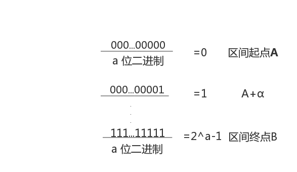
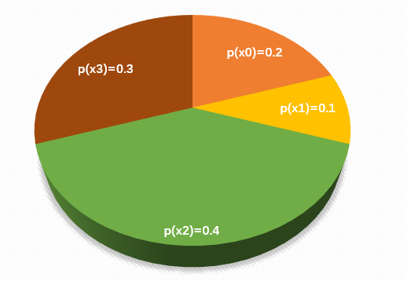

<!DOCTYPE html>
<html>
<head><meta name="generator" content="Hexo 3.9.0">
  <!-- hexo-inject:begin --><!-- hexo-inject:end --><meta charset="UTF-8">
  
  <meta name="description" content="lightdm&#39;s Blog">
  

  
  <meta name="keywords" content="blog.IT.">
  
  
  <meta name="google-site-verification" content="true">
  <meta name="baidu-site-verification" content="true">
  <meta name="msvalidate.01" content="BBA0F05A054A52937A445B0457B5D099">
  
  <title style="text-align:center">用遗传算法解决一个简单问题 | 月之燃梦</title>
  <meta name="viewport" content="width=device-width, initial-scale=1, maximum-scale=1">
  <meta http-equiv="Content-Type" content="text/html; charset=UTF-8">
  <meta name="description" content="学习算法，就我看来，其实就是学习解决问题的一种思想或者方法，应该是一种体验过程的学习，在过程中感悟与升华，最终把它吸收转化成自己的独特的思想；在学习中感受与惊叹先贤的解决问题的思想，未尝不是一种乐趣?这不也昭示了学习本身就是快乐的过程吗？如果连学习都体验不到快乐，那还有什么能体验到快乐呢？　　本文是可以作为遗传算法介绍性文章，是关于一次简单、浅显的利用遗传算法来解决函数优化问题的介绍性文章。">
<meta name="keywords" content="遗传算法">
<meta property="og:type" content="article">
<meta property="og:title" content="用遗传算法解决一个简单问题">
<meta property="og:url" content="https://www.lightdream.xyz/GeneticAlgorithm.html">
<meta property="og:site_name" content="月之燃梦">
<meta property="og:description" content="学习算法，就我看来，其实就是学习解决问题的一种思想或者方法，应该是一种体验过程的学习，在过程中感悟与升华，最终把它吸收转化成自己的独特的思想；在学习中感受与惊叹先贤的解决问题的思想，未尝不是一种乐趣?这不也昭示了学习本身就是快乐的过程吗？如果连学习都体验不到快乐，那还有什么能体验到快乐呢？　　本文是可以作为遗传算法介绍性文章，是关于一次简单、浅显的利用遗传算法来解决函数优化问题的介绍性文章。">
<meta property="og:locale" content="zh-Hans">
<meta property="og:image" content="https://www.lightdream.xyz/image/example.png">
<meta property="og:image" content="https://www.lightdream.xyz/image/selectionProb.png">
<meta property="og:updated_time" content="2020-05-18T03:12:47.363Z">
<meta name="twitter:card" content="summary">
<meta name="twitter:title" content="用遗传算法解决一个简单问题">
<meta name="twitter:description" content="学习算法，就我看来，其实就是学习解决问题的一种思想或者方法，应该是一种体验过程的学习，在过程中感悟与升华，最终把它吸收转化成自己的独特的思想；在学习中感受与惊叹先贤的解决问题的思想，未尝不是一种乐趣?这不也昭示了学习本身就是快乐的过程吗？如果连学习都体验不到快乐，那还有什么能体验到快乐呢？　　本文是可以作为遗传算法介绍性文章，是关于一次简单、浅显的利用遗传算法来解决函数优化问题的介绍性文章。">
<meta name="twitter:image" content="https://www.lightdream.xyz/image/example.png">
  
  
    <link rel="icon" href="/css/images/favicon.ico">
  
  <link rel="stylesheet" href="css/style.css">
  
<!-- Google Analytics -->
<script type="text/javascript">
(function(i,s,o,g,r,a,m){i['GoogleAnalyticsObject']=r;i[r]=i[r]||function(){
(i[r].q=i[r].q||[]).push(arguments)},i[r].l=1*new Date();a=s.createElement(o),
m=s.getElementsByTagName(o)[0];a.async=1;a.src=g;m.parentNode.insertBefore(a,m)
})(window,document,'script','//www.google-analytics.com/analytics.js','ga');

ga('create', 'true', 'auto');
ga('send', 'pageview');

</script>
<!-- End Google Analytics -->


  
  <link rel="stylesheet" href="//cdn.bootcss.com/highlight.js/9.2.0/styles/vs.min.css">
  <script src="//cdn.bootcss.com/highlight.js/9.2.0/highlight.min.js"></script>
  <!-- baidutongji -->
  <script type="text/javascript">
		var _hmt = _hmt || [];
		(function() {
		  var hm = document.createElement("script");
		  hm.src = "https://hm.baidu.com/hm.js?21db01c8f539883ad7f58ebd48f05a73";
		  var s = document.getElementsByTagName("script")[0]; 
		  s.parentNode.insertBefore(hm, s);
		})();
   </script>
   <!--baiduformit -->
   <script>
	(function(){
		var bp = document.createElement('script');
		var curProtocol = window.location.protocol.split(':')[0];
		if (curProtocol === 'https') {
			bp.src = 'https://zz.bdstatic.com/linksubmit/push.js';        
		}
		else {
			bp.src = 'http://push.zhanzhang.baidu.com/push.js';
		}
		var s = document.getElementsByTagName("script")[0];
		s.parentNode.insertBefore(bp, s);
	})();
	</script>
	<script src="//unpkg.com/valine/dist/Valine.min.js"></script>
<link rel="alternate" href="atom.xml" title="月之燃梦" type="application/atom+xml"><!-- hexo-inject:begin --><!-- hexo-inject:end -->
</head></html>
<body class="home blog custom-background custom-font-enabled single-author">
  <!-- hexo-inject:begin --><!-- hexo-inject:end --><div id="page" class="feed site">
      <header id="masthead" class="site-header" role="banner">
    <hgroup>
      <h1 class="site-title">
        <a href="index.html" title="月之燃梦" rel="home">月之燃梦</a>
      </h1>
      
        <h2 class="site-description">
          <a href="index.html" id="subtitle">完全属于自己的安静的一隅</a>
        </h2>
      
    </hgroup>

    <nav id="site-navigation" class="main-navigation" role="navigation">
            <button class="menu-toggle">菜单</button>
            <a class="assistive-text" href="/#content" title="跳至内容">跳至内容</a><!--TODO-->
            <div id="menu-main-content" class="menu-main-container">
                <ul id="menu-main" class="nav-menu">
                
                    <li class="menu-item menu-item-type-post_type menu-item-object-page"><a href="index.html">主页</a></li>
                
                    <li class="menu-item menu-item-type-post_type menu-item-object-page"><a href="/archives">归档</a></li>
                
                    <li class="menu-item menu-item-type-post_type menu-item-object-page"><a href="/views">关于</a></li>
                
                    <li class="menu-item menu-item-type-post_type menu-item-object-page"><a href="/atom.xml">订阅</a></li>
                
                    <li class="menu-item menu-item-type-post_type menu-item-object-page"><a href="/road">求索</a></li>
                
                </ul>
            </div>
    </nav>
	<script src='//unpkg.com/valine/dist/Valine.min.js'></script>
</header>
      <div id="main" class="wrapper">
        <div id="primary" class="site-content">
			<div id="content" role="main"><article id="post-GeneticAlgorithm" class="post-GeneticAlgorithm post type-post status-publish format-standard hentry">
		
      <center><header class="entry-header">
        
        
  
    <h1 class="entry-title article-title">
      用遗传算法解决一个简单问题
    </h1>
  

		<div style="margin-top:10px;">
    <span class="post-time1">
      <span class="post-meta-item-icon">
        <i class="fa fa-keyboard-o"></i>
        <span class="post-meta-item-text">字数统计:</span>
        <span class="post-count">2,325字</span>
      </span>
    </span>
	&nbsp;|
    <span class="post-time2">
    <span class="post-meta-item-icon">
        <i class="fa fa-hourglass-half"></i>
        <span class="post-meta-item-text">阅读时长:约</span>
        <span class="post-count">8&nbsp;分钟</span>
      </span>
    </span>
</div>
        	 
      </header></center>
	  <!-- .entry-header -->
    <div class="entry-content">
      
		<center><span id="busuanzi_container_page_pv">
		总阅读量<span id="busuanzi_value_page_pv"></span>次
		</span></center>
		</br></br>
        <script src="\assets\js\APlayer.min.js"> </script><p>　　学习算法，就我看来，其实就是学习解决问题的一种思想或者方法，应该是一种体验过程的学习，在过程中感悟与升华，最终把它吸收转化成自己的独特的思想；在学习中感受与惊叹先贤的解决问题的思想，未尝不是一种乐趣?这不也昭示了学习本身就是快乐的过程吗？如果连学习都体验不到快乐，那还有什么能体验到快乐呢？<br>　　本文是可以作为遗传算法介绍性文章，是关于一次简单、浅显的利用遗传算法来解决函数优化问题的介绍性文章。<br><a id="more"></a></p>
<h1 id="要解决的问题"><a href="#要解决的问题" class="headerlink" title="要解决的问题"></a>要解决的问题</h1><blockquote>
<p>求解函数 <script type="math/tex">f(x)=x*sin(10\pi +x)+1.0</script> 在区间<script type="math/tex">[-1，2]</script>的最大值。</p>
</blockquote>
<h1 id="知识准备"><a href="#知识准备" class="headerlink" title="知识准备"></a>知识准备</h1><p>　　首先列举一下遗传算法的构成要素</p>
<h3 id="1-染色体的编码以及编码方法"><a href="#1-染色体的编码以及编码方法" class="headerlink" title="1.染色体的编码以及编码方法"></a>1.染色体的编码以及编码方法</h3><p>　　我们要把问题的解空间进行编码，以便于遗传算法能进行操作。编码方式主要有二进制编码，浮点数编码，格雷码等。</p>
<h5 id="二进制编码"><a href="#二进制编码" class="headerlink" title="二进制编码"></a>二进制编码</h5><p>　　假设参数范围为<script type="math/tex">[A,B] (A<B)</script>,我们有长度为a的二进制串来编码，则共有<script type="math/tex">2^a</script>种不同编码，可以将<script type="math/tex">[A,B]</script>分成<script type="math/tex">2^a-1</script>份，等分长度为<script type="math/tex">α</script>，</p>
<hr>
<p><center></center></p>
<hr>
<p>因为当二进制串长度过长时会影响遗传算法的运行效率，所以这类问题就要重新考虑编码方式了。</p>
<h5 id="浮点数编码"><a href="#浮点数编码" class="headerlink" title="浮点数编码"></a>浮点数编码</h5><p>　　对于函数优化问题，例如本题，浮点数编码则更合适了。浮点数编码就是用在一定范围内的浮点数表示每个个体的染色体。</p>
<h5 id="格雷码"><a href="#格雷码" class="headerlink" title="格雷码"></a>格雷码</h5><p>　　其是一种绝对编码的格式，是具有反射特性和循环特性的单步自补码。这些特性保证了它不会出现重大错误。因为它的每次变化都只有相邻两位发生变化，即每次变化与上一次都只有一位不相同。而自然二进制串在向高位进位时却<strong>至少有$1$位不同</strong>。相比于改变多位，明显格雷码的改变一位更稳定些，且出错几率也更小些。其构造方法：</p>
<hr>
<p>以二进制$0$为第$0$项，第$1$项改变最右边的位，第二项改变右起第一位非$0$的位的左边那一位，第三项改变最右边的位…如此反复，即可得到<script type="math/tex">n</script>位的Gray code.</p>
<hr>
<h3 id="2-群体初始化以及计算个体适应度"><a href="#2-群体初始化以及计算个体适应度" class="headerlink" title="2.群体初始化以及计算个体适应度"></a>2.群体初始化以及计算个体适应度</h3><p>　　适应度函数是评估个体的适应性的唯一标准，也是后面选择个体阶段的唯一标准。对于很多问题可以直接将目标函数作为适应度函数。遗传算法的目标函数不受连续可微的约束且定义域可以是任意集合。但对适应度函数有一个要求：针对输入可以计算出的、能加以比较的结果，必须是非负的。</p>
<h3 id="3-遗传算子-操作算子"><a href="#3-遗传算子-操作算子" class="headerlink" title="3.遗传算子(操作算子)"></a>3.遗传算子(操作算子)</h3><h5 id="选择"><a href="#选择" class="headerlink" title="选择"></a>选择</h5><p>　　根据个体的适应度选择进入下一代的个体，个体的适应度越大，则其越有可能被选入下一代。选择机制有轮盘赌方法，最佳个体保存法、期望值方法、排序选择方法、联赛选择方法、排挤方法等。一般都采用轮盘赌方法。下面描述一下轮盘赌算法：</p>
<hr>
<p>1.设种群数量为n，先计算出种群内所有个体适应度<script type="math/tex">f(x_{i})</script>，<br>再计算出种群总适应度<script type="math/tex">sum=\sum\limits_{i=0}^{n-1}f(x_{i})</script>，<br>个体适应度与种群总适应度的比值得到个体选择概率<script type="math/tex">\large p(x_{i})=\frac{f(x_{i})}{sum}</script>。<br>积累概率<script type="math/tex">q_{i}=\sum\limits_{j=0}^{n-1}p(x_{i})</script>表示从第一个个体的选择概率累加，累加到某项即为相应染色体的积累概率。<br>2.生成一个随机数<script type="math/tex">r</script>，若<script type="math/tex">r\leq q_{0}</script>,则选中<script type="math/tex">0</script>号染色体;<br>3.若<script type="math/tex">q_{i-1}<r\le q_{i}(1\leq i<n)</script>，则<script type="math/tex">i</script>号染色体被选中。<br>对于积累概率，如下图先给出个体选中概率:</p>
<p><center></center><br>由图得积累概率:<br>$q(x_{0})=0.2$<br>$q(x_{1})=0.3$<br>$q(x_{2})=0.7$<br>$q(x_{3})=1$<br><strong>染色体的选择概率越大，在上面饼图占的比例也就越大，被选入下一代可能性也就越大</strong><br>轮盘赌选择算子在个体较少时，可能会出现不正确的反映个体适应度的选择过程，即适应的高的个体可能被淘汰了。此时就要考虑其他的选择算子。</p>
<hr>
<h5 id="交叉"><a href="#交叉" class="headerlink" title="交叉"></a>交叉</h5><p>　　交叉算子即把两个亲代个体的部分结构进行替换重组而生成新子代个体的操作。其两个特点：</p>
<ul>
<li>设计的交叉算子必须保证亲代的优良性状能在子代个体中得到遗传和继承。</li>
<li>交叉算子的设计与问题的编码是相互协调的，即编码-交叉设计。</li>
<li>对于二进制串编码，交叉算子主要有一点交叉，两点交叉，多点交叉，一致交叉。其中一点交叉的操作如下：</li>
</ul>
<div class="table-container">
<table>
<thead>
<tr>
<th style="text-align:center">个体</th>
<th style="text-align:center">对应编码</th>
</tr>
</thead>
<tbody>
<tr>
<td style="text-align:center">$P_{1}$</td>
<td style="text-align:center">01010010</td>
</tr>
<tr>
<td style="text-align:center">$P_{2}$</td>
<td style="text-align:center">00101110</td>
</tr>
</tbody>
</table>
</div>
<hr>
<p>假设从左起第$5$位开始进行一点交叉，得到</p>
<div class="table-container">
<table>
<thead>
<tr>
<th style="text-align:center">个体</th>
<th style="text-align:center">取出的二进制串</th>
</tr>
</thead>
<tbody>
<tr>
<td style="text-align:center">$P_{1}$</td>
<td style="text-align:center">0010</td>
</tr>
<tr>
<td style="text-align:center">$P_{2}$</td>
<td style="text-align:center">1110</td>
</tr>
</tbody>
</table>
</div>
<hr>
<p>进行一点交叉后得到两个新个体，</p>
<div class="table-container">
<table>
<thead>
<tr>
<th style="text-align:center">个体</th>
<th style="text-align:center">对应编码</th>
</tr>
</thead>
<tbody>
<tr>
<td style="text-align:center">$P_{1}’$</td>
<td style="text-align:center">00101110</td>
</tr>
<tr>
<td style="text-align:center">$P_{2}’$</td>
<td style="text-align:center">01010010</td>
</tr>
</tbody>
</table>
</div>
<p>这样就完成了一次一点交叉运算。</p>
<ul>
<li>对于实数编码，主要采用算术交叉算子。假设存在个体$P_{1}$、$P_{2}$，对于它们进行算术交叉后得到新个体$P_{1}’$、$P_{2}’$的运算如下,其中伪随机数$\lambda$$\in$[0,1]：</li>
</ul>
<hr>
<p>$\large P_{1}’=\lambda P_{1}+(1-\lambda) P_{2}$<br>$\large P_{2}’=(1-\lambda) P_{1}+\lambda P_{2}$</p>
<hr>
<h5 id="变异"><a href="#变异" class="headerlink" title="变异"></a>变异</h5><p>引入变异算子有两个目的：</p>
<ul>
<li>使遗传算法具备局部搜索能力。当遗传算子通过交叉算子接近最优解领域时，变异算子可以使遗传算法快速向最优解收敛。在这种情况下，变异概率应取较小的值。</li>
<li>使种群具备较好的群体多样性，防止遗传算法出现未成熟收敛情况。此时，比那一概率应取较大的值。</li>
</ul>
<hr>
<p>1.对于二进制编码，其变异方式为随机的选择某些基因位，对这些基因位进行概率性的翻转变异，即$0$变为$1$,$1$变为$0$。<br>2.对于实数编码，其变异方式为随机变异。使变异个体变量分量加上一个伪随机数，该随机数为均匀分布或高斯分布。<br> 变异方式还有逆转变异算子，自适应变异算子等。</p>
<h5 id="遗传算子的性质"><a href="#遗传算子的性质" class="headerlink" title="遗传算子的性质"></a>遗传算子的性质</h5><p>　　交叉算子具备良好的全局搜索能力，是遗传算法的主要操作算子；变异算子具备局部搜索能力，是遗传算法的辅助操作算子。交叉和变异使遗传算法具备均衡的全局搜索能力和局部搜索能力。</p>
<h3 id="回到上面的问题，"><a href="#回到上面的问题，" class="headerlink" title="回到上面的问题，"></a>回到上面的问题，</h3><p>　　对于这个问题，我采取浮点数编码，下面是遗传算法的运行参数：</p>
<pre><code>const double PI = 3.1415927;                 // π
#define N 50                                  // 群体规模
#define T 100                               // 进化代数
#define PC  0.75                              // 参加交配概率
#define PM 0.0875                            // 变异概率
</code></pre><p><strong>完整实现代码请移至我的<a href="https://github.com/lightingmoon/BlogResourceCode/tree/master/GeneticAlgorithm">Github</a></strong></p>
<hr>
<p>　　说一下感想，对于解决问题的范式，无外乎就是从所有可能解决问题的方法中将这个方法找出来，也即搜索。最开始我们有广度搜索和深度搜索，它们都可能在有限时间内搜索到问题的解决方法。但是，它们是盲目搜索，在今天的计算机条件下，一来计算机能表示的状态空间有限，二来其运行速度对一些状态空间稍微大一些的问题，往往要花大量的时间去计算。所以睿智的前人就发明了启发式搜索，通过预先设置一些方法，引导搜索的方向，使它能更快速的进行搜索，得到更满意的答案。根据达尔文进化论，物竞天择，适者生存，不适者淘汰。我们有一种思想叫做类比，既然大自然能淘汰掉不适合生存其中的物种，保留适合的物种，那我们是否可以借鉴这种方式，淘汰掉不合适的搜索路径，留下适合的搜索路径，这样最后得到的就是最佳解决路径了。这就是遗传算法的本质了。这里只是见到了它的冰山一角而已。就当做领略风光了。</p>
<hr>
<h4 id="另外，在这里总结一下c语言获取伪随机数方法"><a href="#另外，在这里总结一下c语言获取伪随机数方法" class="headerlink" title="另外，在这里总结一下c语言获取伪随机数方法"></a>另外，在这里总结一下c语言获取伪随机数方法</h4><p>1.先设置伪随机数种子</p>
<pre><code>srand((int)time(0));
</code></pre><p>2.其次，获取随机数，假如要在子函数里生成随机数，则只能在主函数里设置随机数种子。也就是只用在主函数最开始设置一次种子就可以了。<br>下面是获取伪随机数的一般形式：</p>
<pre><code>rand()%y + x
</code></pre><p>表示生成$[x,y+x)$的伪随机整数。<br>如果需要闭区间$[x,y+x]$的话，可以再给y加个1，即</p>
<pre><code>rand()%(y+1) + x
</code></pre>	
		</br>
		<footer style="text-align: center" class="entry-meta">雪林于
		<a href="">
   <time datetime="2019-01-11T04:33:08.000Z" class="entry-date">
        2019年01月11日 12:33
    </time>
</a>
		
  <span class="article-delim">&#8226;</span>
  <div class="article-category">
  <a class="article-category-link" href="categories/优化算法/">优化算法</a>
  </div>

		
  <span class="article-delim">&#8226;</span>
  <ul class="article-tag-list"><li class="article-tag-list-item"><a class="article-tag-list-link" href="tags/遗传算法/">遗传算法</a></li></ul>

		
			<div id="lv-container" data-id="city" data-uid="MTAyMC8zODM0Mi8xNDg3MA==">
<div> </br> 抛砖引玉 亦或 他山之石，可以攻玉。
</div>
<div id="vcomments"></div>
    <script>
        new Valine({
            el: '#vcomments',
            appId: 'BcwJfKAtl8xeKihdgIxxzKUN-gzGzoHsz',
            appKey: 'YmFEsmcyLDgy8AaXNjFoY9Ge'
        })
    </script>
			
		</footer>
		
    </div>
	<!-- .entry-content -->
</article>

    
<nav class="nav-single">
    <h3 class="assistive-text">文章导航</h3>
    
        <span class="nav-previous"><a href="FindMiddleNumber.html" rel="prev"><span class="meta-nav">←</span> 6-11 求自定类型元素序列的中位数</a></span>
    
    
        <span class="nav-next"><a href="LRUalgorithm.html" rel="next">页置换算法之LRU(最近最久未使用) <span class="meta-nav">→</span></a></span>
    
</nav><!-- .nav-single -->


</div>
		</div>
        <div id="secondary" class="widget-area" role="complementary">
  
    
	<aside class="widget">
        <h3 class="widget-title">站内搜索</h3>
        <div id="site_search">
			<input type="text" id="local-search-input" style="width: 200px;" results="0"/>
			<div id="local-search-result"></div>
        </div>
	</aside>
	
	
  
    
  <aside class="widget">
    <h3 class="widget-title">后起之秀</h3>
    <div class="widget-content">
      <ul>
        
          <li>
            <a href="autoSubmitTableSystem.html">autoSubmitTableSystem</a>
          </li>
        
          <li>
            <a href="deployHexoProjecttoTencentCloud.html">将Hexo博客部署至腾讯云服务器初体验</a>
          </li>
        
          <li>
            <a href="accelerateMyLife.html">三省吾身，一往无前</a>
          </li>
        
          <li>
            <a href="someWordOperationTips.html">一些Word操作技巧</a>
          </li>
        
          <li>
            <a href="GanssianDisturbancePSO.html">基于高斯扰动的粒子群优化算法算法</a>
          </li>
        
          <li>
            <a href="Python-list.html">Python append()方法与深、浅拷贝</a>
          </li>
        
      </ul>
    </div>
  </aside>

  
    
  <aside class="widget">
    <h3 class="widget-title">文以类聚</h3>
    <div class="widget-content">
      <ul class="category-list"><li class="category-list-item"><a class="category-list-link" href="categories/C/">C++</a><span class="category-list-count">3</span></li><li class="category-list-item"><a class="category-list-link" href="categories/PAT/">PAT</a><span class="category-list-count">4</span></li><li class="category-list-item"><a class="category-list-link" href="categories/Python/">Python</a><span class="category-list-count">1</span></li><li class="category-list-item"><a class="category-list-link" href="categories/Web技术相关/">Web技术相关</a><span class="category-list-count">1</span></li><li class="category-list-item"><a class="category-list-link" href="categories/优化算法/">优化算法</a><span class="category-list-count">4</span></li><li class="category-list-item"><a class="category-list-link" href="categories/备忘/">备忘</a><span class="category-list-count">2</span></li><li class="category-list-item"><a class="category-list-link" href="categories/操作系统/">操作系统</a><span class="category-list-count">1</span></li><li class="category-list-item"><a class="category-list-link" href="categories/机器学习/">机器学习</a><span class="category-list-count">1</span></li><li class="category-list-item"><a class="category-list-link" href="categories/汇编语言/">汇编语言</a><span class="category-list-count">1</span></li><li class="category-list-item"><a class="category-list-link" href="categories/算法与数据结构/">算法与数据结构</a><span class="category-list-count">6</span></li><li class="category-list-item"><a class="category-list-link" href="categories/编译原理/">编译原理</a><span class="category-list-count">1</span></li><li class="category-list-item"><a class="category-list-link" href="categories/述梦/">述梦</a><span class="category-list-count">1</span></li><li class="category-list-item"><a class="category-list-link" href="categories/迷人数学/">迷人数学</a><span class="category-list-count">1</span></li><li class="category-list-item"><a class="category-list-link" href="categories/静夜思/">静夜思</a><span class="category-list-count">6</span></li></ul>
    </div>
  </aside>

  
    <h3 class="widget-title">球形宇宙</h3>
<script src="/js/tagcanvas.js" type="text/javascript"></script>
<div class="tags" id="myTags">
 <canvas width="300" height="300" id="my3DTags">
    <p>Anything in here will be replaced on browsers that support the canvas element</p>
</canvas>
</div>
<div class="tags" id="tags">
 <ul>
  <a href="tags/AssemblyLanguage/" style="font-size: 16px; color: #000">AssemblyLanguage</a> <a href="tags/BST/" style="font-size: 16px; color: #000">BST</a> <a href="tags/C/" style="font-size: 25.5px; color: #000">C++</a> <a href="tags/C-11/" style="font-size: 25.5px; color: #000">C++11</a> <a href="tags/DFS/" style="font-size: 16px; color: #000">DFS</a> <a href="tags/LRU/" style="font-size: 16px; color: #000">LRU</a> <a href="tags/ML/" style="font-size: 16px; color: #000">ML</a> <a href="tags/PAT/" style="font-size: 35px; color: #000">PAT</a> <a href="tags/PSO/" style="font-size: 35px; color: #000">PSO</a> <a href="tags/Python/" style="font-size: 16px; color: #000">Python</a> <a href="tags/STL/" style="font-size: 16px; color: #000">STL</a> <a href="tags/Socket/" style="font-size: 16px; color: #000">Socket</a> <a href="tags/Word排版/" style="font-size: 16px; color: #000">Word排版</a> <a href="tags/dp/" style="font-size: 16px; color: #000">dp</a> <a href="tags/list/" style="font-size: 16px; color: #000">list</a> <a href="tags/regex/" style="font-size: 16px; color: #000">regex</a> <a href="tags/split函数/" style="font-size: 16px; color: #000">split函数</a> <a href="tags/二分应用拓展/" style="font-size: 16px; color: #000">二分应用拓展</a> <a href="tags/二分查找/" style="font-size: 16px; color: #000">二分查找</a> <a href="tags/二叉搜索树/" style="font-size: 16px; color: #000">二叉搜索树</a> <a href="tags/交换排序/" style="font-size: 16px; color: #000">交换排序</a> <a href="tags/优化算法/" style="font-size: 16px; color: #000">优化算法</a> <a href="tags/冒泡排序/" style="font-size: 16px; color: #000">冒泡排序</a> <a href="tags/列表/" style="font-size: 16px; color: #000">列表</a> <a href="tags/动态规划/" style="font-size: 16px; color: #000">动态规划</a> <a href="tags/反思/" style="font-size: 35px; color: #000">反思</a> <a href="tags/堆排序/" style="font-size: 16px; color: #000">堆排序</a> <a href="tags/备忘/" style="font-size: 16px; color: #000">备忘</a> <a href="tags/大整数类/" style="font-size: 16px; color: #000">大整数类</a> <a href="tags/字符串分割/" style="font-size: 16px; color: #000">字符串分割</a> <a href="tags/工具/" style="font-size: 16px; color: #000">工具</a> <a href="tags/并查集/" style="font-size: 16px; color: #000">并查集</a> <a href="tags/总结/" style="font-size: 16px; color: #000">总结</a> <a href="tags/所感/" style="font-size: 16px; color: #000">所感</a> <a href="tags/排序/" style="font-size: 16px; color: #000">排序</a> <a href="tags/数学/" style="font-size: 16px; color: #000">数学</a> <a href="tags/梦的救赎/" style="font-size: 16px; color: #000">梦的救赎</a> <a href="tags/梯度下降算法/" style="font-size: 16px; color: #000">梯度下降算法</a> <a href="tags/欧拉公式/" style="font-size: 16px; color: #000">欧拉公式</a> <a href="tags/正则表达式/" style="font-size: 16px; color: #000">正则表达式</a> <a href="tags/正规方程/" style="font-size: 16px; color: #000">正规方程</a> <a href="tags/汇编语言/" style="font-size: 16px; color: #000">汇编语言</a> <a href="tags/泰勒公式/" style="font-size: 16px; color: #000">泰勒公式</a> <a href="tags/监督学习/" style="font-size: 16px; color: #000">监督学习</a> <a href="tags/算法与数据结构/" style="font-size: 16px; color: #000">算法与数据结构</a> <a href="tags/粒子群优化算法/" style="font-size: 16px; color: #000">粒子群优化算法</a> <a href="tags/线性回归/" style="font-size: 16px; color: #000">线性回归</a> <a href="tags/编译原理/" style="font-size: 16px; color: #000">编译原理</a> <a href="tags/自我省悟/" style="font-size: 16px; color: #000">自我省悟</a> <a href="tags/自我调节/" style="font-size: 16px; color: #000">自我调节</a> <a href="tags/词法分析/" style="font-size: 16px; color: #000">词法分析</a> <a href="tags/资源集合/" style="font-size: 16px; color: #000">资源集合</a> <a href="tags/踩坑记录/" style="font-size: 16px; color: #000">踩坑记录</a> <a href="tags/遗传算法/" style="font-size: 16px; color: #000">遗传算法</a> <a href="tags/静夜思/" style="font-size: 25.5px; color: #000">静夜思</a> <a href="tags/页置换算法/" style="font-size: 16px; color: #000">页置换算法</a> <a href="tags/预处理/" style="font-size: 16px; color: #000">预处理</a> <a href="tags/高斯扰动学习策略/" style="font-size: 16px; color: #000">高斯扰动学习策略</a>
 </ul>
</div>
<style type="text/css">
    .category-list li, .tags li{
        display: inline;
        font-size: 1.2em;
        margin-right: 1em;
        line-height: 60px;
        border: 1px solid lightgray;
        padding: 6px;
    }
    .category-list a {
        color: black;
    }
    .category-list:hover a {
        color: gray;
        text-decoration: none;
        font-weight: bold;
    }
    .category-list-count {
        margin-left: 2px;
        font-size: .9em;
    }
    .article-entry ul li:before{
        display: none;
    }
    .article-inner  {
        text-align: center;
    }
    .article-meta {
        display: none;
    }
    .article-header {
        padding-right: 35px;
    }
    #container .article .article-title {
        padding-right: 0;
    }
    .tags {
        max-width: 40em;
        margin: 2em auto;
        margin-top: 0em;
    }
    .tags a {
        margin-right: 1em;
        line-height: 65px;
        border-bottom: 1px solid gray;
    }
    .tags a:hover {
        font-weight: bold;
        text-decoration: none;
    }
    .category-list-child {
        display: none;
    }
</style>
    <script type="text/javascript">
      window.onload = function() {
        try {
          TagCanvas.Start('my3DTags','tags',{
            textFont: 'Georgia,Optima',
            textColour: null,
            outlineColour: '#ff00ff',
            weight: true,
            reverse: true,
            depth: 0.8,
            maxSpeed: 0.05,
            bgRadius: 0.1,
            freezeDecel: true
          });
        } catch(e) {
          // something went wrong, hide the canvas container
          document.getElementById('myTags').style.display = 'none';
          document.getElementById('myTags').style.display = 'none';
        }
      };
    </script>
  
    
  <aside class="widget">
    <h3 class="widget-title">一眼千山</h3>
    <div class="widget-content">
      <ul class="archive-list"><li class="archive-list-item"><a class="archive-list-link" href="archives/2020/06/">June 2020</a><span class="archive-list-count">2</span></li><li class="archive-list-item"><a class="archive-list-link" href="archives/2020/05/">May 2020</a><span class="archive-list-count">2</span></li><li class="archive-list-item"><a class="archive-list-link" href="archives/2020/04/">April 2020</a><span class="archive-list-count">1</span></li><li class="archive-list-item"><a class="archive-list-link" href="archives/2020/03/">March 2020</a><span class="archive-list-count">3</span></li><li class="archive-list-item"><a class="archive-list-link" href="archives/2020/02/">February 2020</a><span class="archive-list-count">3</span></li><li class="archive-list-item"><a class="archive-list-link" href="archives/2020/01/">January 2020</a><span class="archive-list-count">1</span></li><li class="archive-list-item"><a class="archive-list-link" href="archives/2019/12/">December 2019</a><span class="archive-list-count">1</span></li><li class="archive-list-item"><a class="archive-list-link" href="archives/2019/05/">May 2019</a><span class="archive-list-count">1</span></li><li class="archive-list-item"><a class="archive-list-link" href="archives/2019/04/">April 2019</a><span class="archive-list-count">1</span></li><li class="archive-list-item"><a class="archive-list-link" href="archives/2019/03/">March 2019</a><span class="archive-list-count">1</span></li><li class="archive-list-item"><a class="archive-list-link" href="archives/2019/02/">February 2019</a><span class="archive-list-count">5</span></li><li class="archive-list-item"><a class="archive-list-link" href="archives/2019/01/">January 2019</a><span class="archive-list-count">2</span></li><li class="archive-list-item"><a class="archive-list-link" href="archives/2018/12/">December 2018</a><span class="archive-list-count">1</span></li><li class="archive-list-item"><a class="archive-list-link" href="archives/2018/11/">November 2018</a><span class="archive-list-count">1</span></li><li class="archive-list-item"><a class="archive-list-link" href="archives/2018/10/">October 2018</a><span class="archive-list-count">4</span></li><li class="archive-list-item"><a class="archive-list-link" href="archives/2018/09/">September 2018</a><span class="archive-list-count">1</span></li><li class="archive-list-item"><a class="archive-list-link" href="archives/2018/08/">August 2018</a><span class="archive-list-count">1</span></li><li class="archive-list-item"><a class="archive-list-link" href="archives/2018/07/">July 2018</a><span class="archive-list-count">3</span></li></ul>
    </div>
  </aside>

  
    
	<aside class="widget">
		<h3 class="widget-title">访客统计</h3>
		 <a href="https://info.flagcounter.com/Qa0m"></a>
	</aside>
	
  
    
	<aside class="widget">
		<h3 class="widget-title">Stark悠扬</h3>
		<iframe frameborder="no" border="0" marginwidth="0" marginheight="0" width=390 height=400 src="https://music.163.com/outchain/player?type=0&id=2334222145&auto=0&height=400">
		</iframe>
	</aside>
	
  
</div>
      </div>
	  <script src="/js/jquery-2.0.3.min.js"></script>


  <link rel="stylesheet" href="fancybox/jquery.fancybox.css">
  <script src="fancybox/jquery.fancybox.pack.js"></script>

<script src="js/script.js"></script>
<script src="/js/navigation.js"></script>
<div id="bg"></div>

      <footer style="text-align:center" id="colophon" role="contentinfo">
	<script async src="//busuanzi.ibruce.info/busuanzi/2.3/busuanzi.pure.mini.js"></script>
	<p>&copy; 2020 lightdm
    All rights reserved.</p>
	<p>Powered by <a href="http://hexo.io/" target="_blank">Hexo</a>&nbsp;&nbsp;|&nbsp;&nbsp;<a href="http://www.beian.miit.gov.cn/">陕ICP备18013708号-1</a><br>
	<div><p style="float:center;height:20px;line-height:20px;margin: 0px 0px 0px 5px; color:#939393;">陕公网安备 61090202000093号</p>
	</div>
</footer>
<script type="text/javascript">      
	var search_path = "search.xml";
	if (search_path.length == 0) 
	{
		search_path = "search.xml";
	}
</script>
  </div>
<script type="text/x-mathjax-config">
    MathJax.Hub.Config({
        tex2jax: {
            inlineMath: [ ["$","$"], ["\\(","\\)"] ],
            skipTags: ['script', 'noscript', 'style', 'textarea', 'pre', 'code'],
            processEscapes: true
        }
    });
    MathJax.Hub.Queue(function() {
        var all = MathJax.Hub.getAllJax();
        for (var i = 0; i < all.length; ++i)
            all[i].SourceElement().parentNode.className += ' has-jax';
    });
</script>
<script src="https://cdnjs.cloudflare.com/ajax/libs/mathjax/2.7.1/MathJax.js?config=TeX-MML-AM_CHTML"></script>
<!--<script src="http://cdn.mathjax.org/mathjax/latest/MathJax.js?config=TeX-AMS-MML_HTMLorMML"></script>--><!-- hexo-inject:begin --><!-- Begin: Injected MathJax -->
<script type="text/x-mathjax-config">
  MathJax.Hub.Config({"tex2jax":{"inlineMath":[["$","$"],["\\(","\\)"]],"skipTags":["script","noscript","style","textarea","pre","code"],"processEscapes":true},"TeX":{"equationNumbers":{"autoNumber":"AMS"}}});
</script>

<script type="text/x-mathjax-config">
  MathJax.Hub.Queue(function() {
    var all = MathJax.Hub.getAllJax(), i;
    for(i=0; i < all.length; i += 1) {
      all[i].SourceElement().parentNode.className += ' has-jax';
    }
  });
</script>

<script type="text/javascript" src="https://cdnjs.cloudflare.com/ajax/libs/mathjax/2.7.1/MathJax.js">
</script>
<!-- End: Injected MathJax -->
<!-- hexo-inject:end -->
</body>
<script>
hljs.initHighlightingOnLoad();
</script>
<script src="//code.tidio.co/rujsl21vg9o4kneqjnf9pd7mhygjo6vb.js" async></script>
</html>